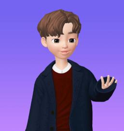

메타버스 속 멀티 페르소나 경향이
태도, 몰입, 지속사용의도에 끼치는 영향
2023 봄철 3학회 공동학술대회:
미디어경영학회, 정보사회학회, 사이버커뮤니케이션학회
2023-05-12
Changjun Lee
Hanyang University
Dep. Media & Social Informatics

We are..
Creative & Interaction Research Institute
| 연구책임자 | 전임연구원 | 선임연구원 | 연구원 |
|---|---|---|---|
 |
 |
 |
|
| 이창준 교수 | 최윤슬 연구교수 | 이승경 박사과정 | 박영주 석사과정 |
Research Background
Metaverse
-
Definition
A virtual coexistence world that combines online virtual space and reality
A compound word of
metameaning transcendence anduniversemeaning universeA collective virtual world of coexistence in which
virtual spaceandphysical spaceare combined (virtual shared space)
the metaverse is a combination of virtual worlds, augmented reality, and the internet. The common devices that let you access this virtual space include augmented reality (AR) glasses and virtual reality (VR) headsets.
Research Background
Metaverse

Note: What is Metaverse Art? in Materworks (link)
Research Background
Metaverse is different from the existing SNS
-
Unlike existing SNS, the metabus environment has a difference in that
social exchangesandcultural and economic activitiesare possible.
-
In addition, users can exist in various forms:
From what you can see in MV (Appearance, Clothing Style, Brand)
Even to the invisible things (Personality, Characteristics)
All these features become real with Avatar.
Research Background
Multi-persona
Multi-personarefers to the concept of an individual assuming multiple roles, identities, or personas, often to adapt to different contexts or environments, or to fulfill various needs or expectations.
-
Contexts:
- Personal life (family, friends, hobbies)
- Professional life (work, career, networking)
- Online presence (social media, forums, gaming)
- Cultural or social settings (community, religion, politics)
Research Background
Multi-persona
Multi-personarefers to the concept of an individual assuming multiple roles, identities, or personas, often to adapt to different contexts or environments, or to fulfill various needs or expectations.
-
Reasons for adopting multi-persona:
- Adaptability and versatility
- Privacy and anonymity
- Personal exploration and growth
- Meeting diverse expectations or demands
- Creativity and self-expression
Research Background
Multi-persona
Multi-personarefers to the concept of an individual assuming multiple roles, identities, or personas, often to adapt to different contexts or environments, or to fulfill various needs or expectations.
-
Benefits:
- Enhanced flexibility and adaptability
- Improved understanding of different perspectives
- Greater personal and professional growth
- Ability to navigate various social situations
- Increased resilience and coping strategies## Research Background
Research Background
The Effects of Metaverse Users’ Social and Psychological Factors on Avatar Customization
Here, Multi-persona is the degree to which an avatar is created differently from the actual person (Appearance, Brand, Style, Personality). (Lee et al., working paper)
Problem Description
Explored the factors of boosting users’ Multi-persona tendency
However, still unknown mechanisms remain (i.e. Multi-persona → Attitude, Flow)
Research Questions
- Do users’ multi-persona tendencies differ between metaverses based on anonymity and real name?
- between Real vs. Meta (Real-name based)
- between Real vs. Meta (Anonymous)
- between Meta (Real-name based) vs. Meta (Anonymous)
-
How do multi-persona tendencies affect the way enjoying metaverse?
What is the relationship between multiple personas and immersion?
What is the relationship between multiple personas and intention to use?
Method
Experimental Survey
Sample #:
528-
Questionnaires
-
Avatar customizing
- Appearance
- Brand
- Style
- Characteristics
Avatar presence, immersion, intention to use
Socio-deomographic factors
-
Method
Result: Appearance
Result: Appearance

Result: Brand
Result: Brand
Result: Style

Result: Style
Result: Characteristics
Result: Characteristics
Result: Corr btw Multi-persona
Research Design
Chosen representative experiment: Real vs. Meta(Anonymous)
-
First dimension:
Apprearancevs.Style
| Appr diff < Median(Appr diff) | Appr diff > Median(Appr diff) | |
|---|---|---|
| Style → (-) | A | B |
| Style → (+) | C | D |
-
Second dimension:
Apprearancevs.Brand/Characters
| Appr diff < Median(Appr diff) | Appr diff > Median(Appr diff) | |
|---|---|---|
| Brand/Chars → (-) | E | F |
| Brand/Chars → (+) | G | H |
- The outcome variables interested in:
Immersion(Flow), Attitude, Intention to Continuous Use
Research Design
First dimension: Apprearance vs. Style
Research Design
Second dimension: Apprearance vs. Brand/Characters
Result: Group Difference in ATT, FLOW, ITU
Appearance vs. Style → Flow: No statistical sig. difference among groupsAppearance vs. Style → Attitude: No statistical sig. difference among groupsAppearance vs. Style → Intention to Use: No statistical sig. difference among groups
Appearance vs. Brd/Chr → Flow: No statistical sig. difference among groupsAppearance vs. Brd/Chr → Attitude: No statistical sig. difference among groupsAppearance vs. Brd/Chr → Intention to Use: No statistical sig. difference among groups
Research Design (NEW)
Multiple Linear Regressions
-
Experimental settings
(1) Real vs. Meta(Anonymous)
(2) Real vs. Meta(Real-name based)
(3) Meta(Real-name based) vs. Meta(Anonymous)
\[ Y_i = \beta_1 \Delta Appr_i + \beta_2 \Delta Style_i + \beta_3 \Delta Brand_i + \beta_4 \Delta Chars_i + \alpha + \epsilon_i \]
\[ \Delta X_i = X_{i, j=k}-X_{i, j \neq k} \]
\(Y_i\) = {Attitude to Metaverse, Flow, Intention to Continuous Use}
where \(i\) and \(k\) represent individual and experiment setting, respectively
Result: Total at a glance
Result: Exp(1) Real vs. Meta(Anonymous)
-
The more differently a user creates their avatar’s Appearance,
the greater the probability of a positive attitude towards the metaverse (0.139, P<.01),
as well as the likelihood of continued usage (0.084, P<.1).
-
The more a user creates their avatar’s style to be casual (compared to formal)
- the lower the probability of continued usage (-0.132, P<.01).
\(\Delta Style_i > 0\) means that user \(i\) creates their avatar’s style towards ‘Casual’ (from ‘Formal’)
Result: Exp(2) Real vs. Meta(Real-name based)
-
The more differently a user creates their avatar’s Appearance,
the greater the probability of a positive attitude towards the metaverse (0.177, P<.001),
as well as the likelihood of immersion into the metaverse (0.100, P<.05) and continued usage (0.150, P<.1).
-
The more a user creates their avatar’s brand to be no-brand (compared to luxurious)
- the higher the probability of immersion into the metaverse (0.107, P<.05).
\(\Delta Brand_i > 0\) means that user \(i\) creates their avatar’s brand towards ‘no-brand’ (from ‘luxurious’)
Result: Exp(3) Meta(Real) vs. Meta(Anony)
-
The more differently a user creates their avatar’s Appearance,
- the greater the probability of a positive attitude towards the metaverse (0.110, P<.05), as well as the likelihood of immersion into the metaverse (0.116, P<.01).
-
The more a user creates their avatar’s style to be casual (compared to formal)
- the higher the probability of continued usage (0.151, P<.01).
-
The more a user creates their avatar’s characters to be plain/sober (compared to multi-dimensional)
- the lower the probability of a positive attitude towards the metaverse (-0.086, P<.1), as well as the likelihood of immersion (-0.120, P<.05) and continued usage (-0.112, P<.05).
\(\Delta Chars_i > 0\) means that user \(i\) creates their avatar’s characters towards ‘Sober’ (from ‘Multi-dimensional’)
Discussion
What we’ve found are..
Multi-persona in
avatar appearanceis associated with a positive attitude towards the metaverse and increased likelihood of continued usage, regardless of the type of metaverse (Exp 1, 2, and 3).Multi-persona in
avatar style: A more casual style is associated with a lower likelihood of continued usage in anonymous metaverses (Exp 1).Multi-persona in
avatar brand: No-brand is more associated with a high immersion in both real-name based and anonymous metaverse (Exp 2 and 3).Multi-persona in
avatar characteristics: Multi-dimensional avatar character is associated with a positive attitude and high immersion (Exp 2 and 3).
The tendency to create multi-personal avatars is shown to have an impact on attitudes, immersion, and intention to continue using the meta-verse platform!